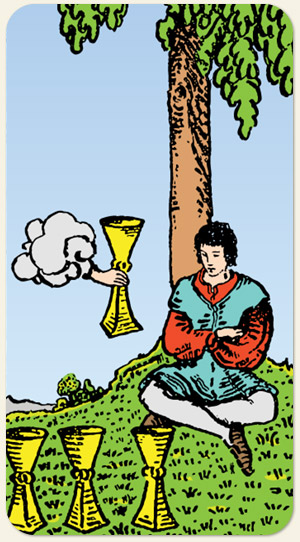

A introspecção, a reavaliação e, às vezes, a apatia. Um período em que o indivíduo se sente desmotivado com as ofertas do mundo externo, buscando respostas no silêncio interior. A pausa emocional que pode ser tanto um momento necessário de meditação quanto um estado de tédio ou indiferença diante de novas oportunidades.
Organização e fluidez, cumprir com as responsabilidades, materializar um propósito, sair do campo das ideias, sair do ciclo de oba-oba.
São as águas paradas em um aquário, o rio que corria de forma fluida e orgânica se transforma em uma piscina de lados bem angulados e que, se não for limpa de forma adequada, cria lodo, atrai insetos, produz mau cheiro. É a represa, numa versão menos engenhosa que a piscina. Referência: signo de Escorpião (água fixa).
Positivo: Se abrir para o novo, aceitar o chamado, as vocações, os desafios, partir para o próximo nível, maturidade, estabilidade, rotina, organização de sentimentos.
Negativo: Procrastinação, negar responsabilidades, estado de negação, empacar, negar o Às de Copas é negar um novo início.
Símbolos: Homem, Árvore, Mão Saindo da Nuvem, Montanhas.
Cores: Azul, Amarelo, Vermelho, Verde.